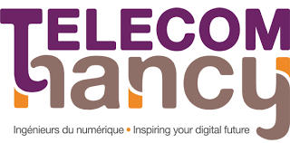

<div id="pageVisits" class="pageContent">
   <div class="firstBlockNextToSidebar defaultText">
   </br>
   <h1 class="pageTitle">Visites de laboratoires 2017</h1>
<br/>
<br/>
      <p>Plusieurs laboratoires ouvrent leurs portes pour accueillir les meilleurs classés de chaque académie. Voici la liste des visites pour lequelles nous avons déjà les dates : </p>


      <p style='clear:both'>
      <a href="https://dpt-info-sciences.univ-rouen.fr/index.php/accueil-mssi"></a>
      <b>Rouen, le mercredi 26 avril 2017 :</b><br/>
      <li><b>Chercheur :</b> Magali Bardet, chercheuse en cryptographie post-quantique.</br>
      <li><b>Lieu :</b> Laboratoire d'Informatique, du Traitement de l'Information et des Systèmes spécialisé dans la recherche dans l'informatique, les sciences et les technologies de l'information.
      </p>


      <p><a href="https://www.ensicaen.fr/formations/ingenieur-informatique/monetique-et-ssi/"></a>
      <b>Caen, le mercredi 10 mai 2017 :</b><br/>
      <li><b>Chercheur :</b> Patrick Lacharme, chercheur en cryptographie appliquée<br/>
      <li><b>Lieu :</b> laboratoire GREYC spécialisé dans la recherche en informatique.
      </p>


      <p style='clear:both'> <a href="http://www.univ-mayotte.fr/fr/index.html"> </a>
      <b>Dembemi, Mayotte, le mercredi 10 mai 2017 :</b><br/>
      <li><b>Chercheur :</b> Solym Manou-Abi, chercheur en mathématiques et applications.<br/>
      <li><b>Lieu :</b> centre universitaire de formation et de recherche de Mayotte à Dembeni, spécialisé dans la recherche en Mathématiques et applications.
      </p>

      <p style='clear:both'>  <a href="https://www.telecom-bretagne.eu/formations/masteres_specialises/cybersecurite/">   </a>
      <b>Rennes, le mercredi 10 mai 2017 :</b><br/>
      <li><b>Chercheur :</b> Caroline Fontaine, chercheuse sur le chiffrement homomorphe et la confidentialité des données externalisées.<br/>
      <li><b>Lieu :</b> laboratoire en sciences et techniques de l'information, de la communication et de la connaissance spécialisé dans la recherche dans les sciences et technologies de l'information et de la communication.
      </p>


      <p style='clear:both'> <a href="https://www.upf.pf/"> </a>
      <b>Polynésie Française, le mercredi 10 mai 2017 :</b><br/>
      <li><b>Chercheur :</b> Gaetan Bisson, chercheur en théorie algorithmique des nombres.<br/>
      <li><b>Lieu : </b> laboratoire de mathématiques de l’université de la Polynésie française spécialisé dans la recherche en Géométrie Algébrique et Applications à la Théorie de l'Information.
      </p>

      <p style='clear:both'> <a href="https://etudes.univ-rennes1.fr/master-crypto/">   </a>
      <b>Nantes, le mercredi 10 mai 2017 :</b><br/>
      <li><b>Chercheur :</b> Christophe Ritzenthaler, chercheur en arithmétique et géométrie effective avec applications à la cryptographie.<br/>
      <li><b>Lieu : </b> laboratoire IRMAR spécialisé dans la recherche en mathématiques pures.
      </p>

      <p style='clear:both'>  <a href="http://www.gemalto.com/france">   </a>
      <b>Marseille, le mercredi 10 mai 2017</b><br/>
      <li><b>Chercheur :</b> Pascal Moitrel, chercheur sur l’attaque par canaux cachés, attaque par fautes, cartes à puce, transactions sécurisées.<br/>
      <li><b>Lieu :</b> Security Lab de l’entreprise Gemalto spécialisé dans la recherche en attaques physiques (electronique, statistique, cryptographie, ...)
      </p>

      <p style='clear:both'> <a href=https://www.rocq.inria.fr/secret/index.php> </a>
      <b>Paris, le mercredi 31 mai 2017 :</b><br/>
      <li><b>Chercheur :</b> Anne Canteaut, chercheuse en cryptographie symétrique.</br>
      <li><b>Lieu :</b> équipe SECRET à l'Inria Paris spécialisé dans la recherche cryptographie, les codes correcteurs et l'information quantique.
      </p>

      <p style='clear:both'> <a href="http://www.univ-lorraine.fr/"> </a>
      <b>Strasbourg, le mercredi  31 mai 2017 :</b><br/>
      <li><b>Chercheur :</b> Cécile Dartyge, chercheuse en théorie analytique des nombres.<br/>
      <li><b>Lieu :</b> institut Elie Cartan à l’université Lorraine, spécialisé dans la recherche en mathématiques.
      </p>

      <p style='clear:both'> <a href="http://www.univ-fcomte.fr/"> </a>
      <b>Belfort, le mercredi 31 mai 2017</b><br/>
      <li><b>Chercheur :</b> Jean-François Couchot, chercheur en génération de nombres pseudo-aléatoires, stéganographie, stéganalyse.<br/>
      <li><b>Lieu :</b> département DISC à Belfort, spécialisé dans la recherche en informatique.
      </p>

      <p style='clear:both'> <a href="https://www.cryptoexperts.com/"> </a>
      <b>Lille, le mercredi 31 mai 2017 :</b><br/>
      <li><b>Chercheur :</b> Matthieu Rivain, chercheur sur la sécurité des cartes bancaires et des calculs dans le cloud.<br/>
      <li><b>Lieu :</b> CryptoExperts, société privée d'innovation et expertise au domaine de la cryptologie.
      </p>

      <p style='clear:both'> <a href="http://www.master-secrets.uvsq.fr/ "> </a>
      <b>Versailles, le mercredi 31 mai 2017</b><br/>
      <li><b>Chercheur :</b> Christina Boura, chercheuse en cryptographie symétrique<br/>
      <li><b>Lieu :</b> laboratoire de Mathématiques de Versailles spécialisé dans la recherche en mathématiques pures et appliqués.
      </p>

      <p style='clear:both'> <a href="http://www.polytech-montpellier.fr/index.php/formation/informatique-et-gestion-ig/presentation"> </a>
      <b>Montpellier, le mercredi 31 mai 2017 :</b><br/>
      <li><b>Chercheur :</b> Eleonora Guerrini, chercheuse en cryptographie, codes correcteurs et calcul formel.<br/>
      <li><b>Lieu :</b> laboratoire LIRM spécialisé en informatique, robotique et microélectronique.
      </p>

      <p style='clear:both'> <a href="http://www.ens-lyon.fr/"></a>
      <b>Lyon, le 31 mai 2017 :</b><br/>
      <li><b>Chercheur :</b> Damien Stehlé, chercheur en cryptographie reposant sur les réseaux.<br/>
      <li><b>Lieu : </b> ENS de Lyon spécialisé dans la recherche en informatique.
      </p>

      <p style='clear:both'> <a href="https://http://telecomnancy.univ-lorraine.fr/fr/formation/cursus/"></a>
      <b>Nancy, le mercredi 31 mai 2017 :</b><br/>
      <li><b>Chercheur : </b> Suzanne Collin et Marie Stein-Lanot, chercheuses en système et sécurité.<br/>
      <li><b>Lieu : </b>TELECOM Nancy, école d'ingénieurs du numérique.
      </p>

      <p style='clear:both'> <a href="https://www.universita.corsica/fr/">   </a>
      <b>Corse, le mercredi 31 mai 2017 :</b><br/>
      <li><b>Chercheur : </b> Lucile Rossi et plusieurs de ses collègues</br>
      <li><b>Lieu :</b> laboratoire Science pour l'environement de l'Université de Corse.</p>

      <p style='clear:both'> <a href="https://www.u-picardie.fr/"> </a>
      <b>Amiens, le mercredi 7 juin 2017 :</b><br/>
      <li><b>Chercheur : </b> Sorina Ionica, chercheuse en cryptographie et courbes elliptiques.<br/>
      <li><b>Lieu :</b> Laboratoire MIS à Amiens spécialisé dans la recherche en systèmes distribués et robotique.
      </p> 

      <p style='clear:both'><a href="http://mastercsi.labri.fr/"></a>
      <b>Bordeaux, le mercredi 7 juin 2017 :</b><br/>
      <li><b>Chercheur :</b> Damien Robert, chercheur en mathématiques pures.<br/>
      <li><b>Lieu :</b> Inria Bordeaux Sud Ouest, spécialisé dans la recherche en cryptographie sur courbes elliptiques.
      </p>

      <p style='clear:both'> <a href="https://crypto.di.ens.fr/web2py">   </a>
      <b>Amiens, le mercredi 7 juin 2017 :</b><br/>
      <li><b>Chercheur :</b> Damien Vergnaud, chercheur en conception et analyse de protocoles cryptographiques cryptanalyse.<br/>
      <li><b>Lieu :</b> département d'informatique de l'École normale supérieure, spécialisé dans la recherche en Informatique.
      </p>

      <p style='clear:both'>   <a href="https://www.imj-prg.fr/">   </a>
      <b>Paris, le mercredi 14 juin 2017 :</b><br/>
      <li><b>Chercheur : </b> Razvan Barbulescu, chercheur sur les bases mathématiques de la cryptographie.<br/>
      <li><b>Lieu : </b>institut mathématique de Jussieu-Paris rive gauche, spécialisé dans la recherche en mathématiques pures.
      </p>

      <p style='clear:both'> <a href="http://www.cryptis.fr/">   </a>
      <b>Limoges, le mercredi 14 juin 2017 :</b><br/>
      <li><b>Chercheur : </b> Olivier Blazy, chercheur sur la sécurité des protocoles cryptographiques.<br/>
      <li><b>Lieu : </b>laboratoire XLIM spécialisé dans la recherche en protection de l'information, les drones, ...  
      </p>

      <p style='clear:both'> <a href="http://mosig.imag.fr/">   </a>
      <b>Grenoble, le mercredi 14 juin 2017 :</b><br/>
      <li><b>Chercheur : </b> Vanessa Vitse, chercheuse en cryptographie asymétrique.<br/>
      <li><b>Lieu : </b> institut Fourier spécialisé dans la recherche en mathématiques pures.
      </p>


   </div>

</div>
